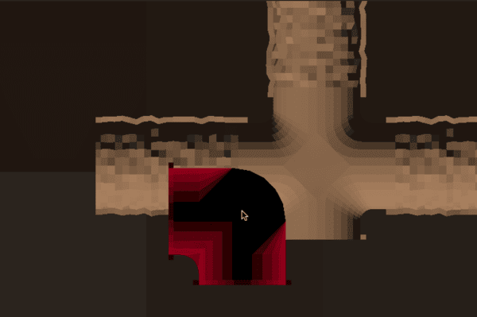
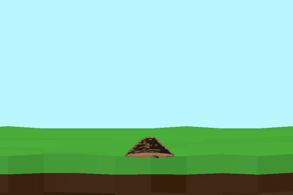
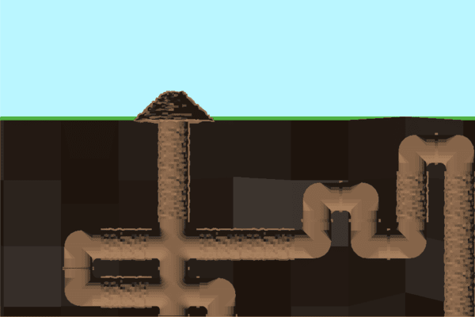

Ant Colony Simulator
<Back to main page>Last year, I developed a fascination with ants—a seemingly odd interest at first, yet something about their organized, cooperative societies captivated me. The way they work together with such precision sparked my imagination, particularly as a programmer with a penchant for creating simulations. My curiosity quickly turned into a vision: a game that could mimic this fascinating colony dynamic, where players would manage an ant colony as it grows, faces threats, and interacts with its environment.
While this project is still in early development, the multimodal nature of game development, from 3D modeling to physics, has pushed me to to thrive in my advanced course as I reinforce my knowledge through something that I have a deep passion for.
Below are some images of a few interesting elements of the project.

A robust grid system allows hassle-free module organization.

The dynamic camera seamlessly shifts between above and below ground views.

The low-poly art style lends a rugged feel to the colony.
<Back to main page>